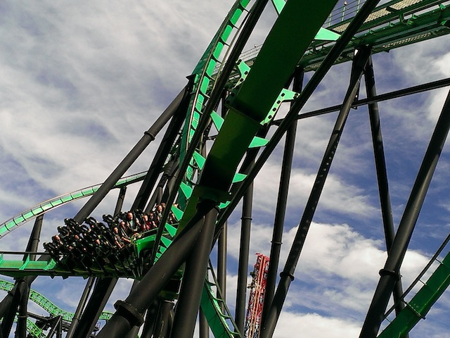

| |
SFMM's Holiday in the Park 2014
All right. Its time for another Six Flags Magic Mountain update. I checked out the park for SFMM's new Christmas Event, Holiday in the Park, as well as visit the park another time when Chad came into town. And of course, Chad had to get his Speedy Gonzalas credit. WHORE!!!
 And in other news, construction on Twisted Collosus is going well.
And in other news, construction on Twisted Collosus is going well.
 Wow. Rocky Mountain is really forcing Six Flags Magic Mountain to pull their act together for construction. No seriously. There's already a lot of track coming up. Full Throttle wasn't this done until around March and Green Lantern was at this stage in freaking May!! I think for once, Six Flags Magic Mountain's new ride might actually open on time.
Wow. Rocky Mountain is really forcing Six Flags Magic Mountain to pull their act together for construction. No seriously. There's already a lot of track coming up. Full Throttle wasn't this done until around March and Green Lantern was at this stage in freaking May!! I think for once, Six Flags Magic Mountain's new ride might actually open on time.
Poor other side of the station for Collosus.

Hey, Riddlers Revenge was running really good today.
 Hi Original X Logo. How's it going? =)
Hi Original X Logo. How's it going? =)
And now, our visit to the park for SFMM's Holiday in the Park Event. This perhaps take the award for most spontaneous visit to Six Flags Magic Mountain ever, and considering my record of spontaneous trips, that's saying something. 90 minutes ago, had completely different plans. BOOM! Here I am. Let's see what Magic Mountain is pulling off for Christmas.
I hope you like food because Six Flags put out a ton of food for this Holiday in the Park event and we're here to try it all.
 Six Flags isn't spraying out the soap as an attempt to make fake snow (went to the real snow this month) and liven the place up for the Holidays. They're spraying the soap because you're all filthy and trying to wash you guys off. Seriously. Take a shower.
Six Flags isn't spraying out the soap as an attempt to make fake snow (went to the real snow this month) and liven the place up for the Holidays. They're spraying the soap because you're all filthy and trying to wash you guys off. Seriously. Take a shower.
In checking out all the new food for Holiday in the Park, let's move on and pig out on the best kind of food there is. Dessert.
This Gingerbread Cheescake was amazing. Easily the best food I've had in a Six Flags park ever. I kind of hope that they keep this on the menu permanently. =)
Nice Holiday Fountain you've got there. I know they used it to make a Christmas Tree earlier, but I've heard stories about they can use that fountain to do even better things.
Ooh. They've really gone all out and decked the halls for the Full Throttle area.
Hey look!! A big shiny aluminum Christmas Tree! Maybe they'll later paint it pink! =)
All right. Everythings been good so far. Let's see how they pull off the Left Over Thanksgiving Dog.
I was impressed with a lot of the new Holiday in the Park Food. The Left Over Thanksgiving Dog was not one of those foods. The Stuffing was just bread crumbs, I'm not a fan of cranberries, the bun, while I think was supposed to be a toasted roll, just tasted old and stale. And from there on out, it was just an ordinary hot dog. Not recommended.
EDIT: I came back for another official event showcasing the Holiday in the Park food. It was much better that day. Much fresher bun. =)
Hey, they have deep fried Oreos. Now I can get my Deep Fried Food for the year since I missed out at the L.A County Fair this year.
Out of all the deep fried foods I've tried, Deep Fried Oreos still remains one of my favorites, just behind Deep Fried Nutter Butters.
 Ok. The Full Throttle Sports Bar is looking pretty.
Ok. The Full Throttle Sports Bar is looking pretty.
This is actually the first time I went into the Full Throttle Sports Bar. I was never interested in the place since I'm just not a fan of the new Full Throttle area. I know in my earlier Spring SFMM 2014 Update, I commented about how Mooseburger Lodge's paint job was ugly, fit in with Full Throttle more than the High Sierra Territority, and I joked about how soon, it'll be re-named ACTION BURGERS!! Well it turns out that I was practically right as it was turned into a Full Throttle Sports Bar. DAMMIT!! Don't take my jokes as serious ideas!! But hey, at least the bar looks nice.
Hey, at least they serve festive beers. Pumpkin & Chocolate Beer. Mmm, let's try it out.
Lesson learned. Beer + Selfie = BAD IDEA!!!
Give Six Flags some credit, the beer may be expensive (no surprise), but at least it was really good and they actually got a local brew to go alongside one of the main mega brands (And Shock Top is one of the better mega beer brands).
Yet another Christmas Tree, and this one looks a bit more traditional.
Love DC Universe all decked out in Christmas Lights.
Never tried the Peppermint Popcorn, but I love flavored Popcorn and am glad that they have this at Six Flags Magic Mountain.
EDIT: It's really good.
I generally don't have high expectations for events at Six Flags Magic Mountain, especially considering all they've done for past Christmases, but this, for once, doesn't feel half-assed. I applaud Six Flags Magic Mountain for all that they've done for Holiday in the Park and hope they continue to have Christmas Events of this quality in the future. Thumbs up from Incrediblecoasters. =)
They were all out of tamales at Food Etc, which made Ceaser angry. Because Ceaser has not eaten enough food tonight. He needs MORE DAMMIT!!!
A: You guys don't sing well. Sorry to be mean, but it's true. B: STOP SINGING LET IT GO!!!! GAH!!! SO SICK OF THAT SONG!!!
Melt an innocent peep. Satisfy the sadist in you today. =)
And finally, we close out the night trying out the parks Peppermint Sundae Funnel Cake.
Hey, not only was it good, but it wasn't made by me, which is always a good thing. Thanks for checking our update and be sure to visit Six Flags Magic Mountain for Holiday in the Park if you live in Southern California. They really put out a great event this year.
Home
|